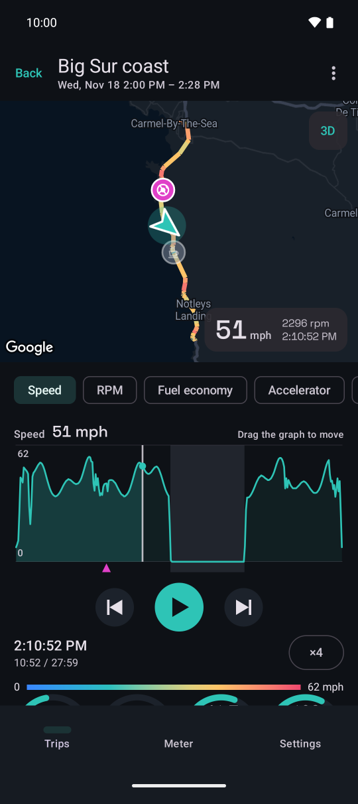
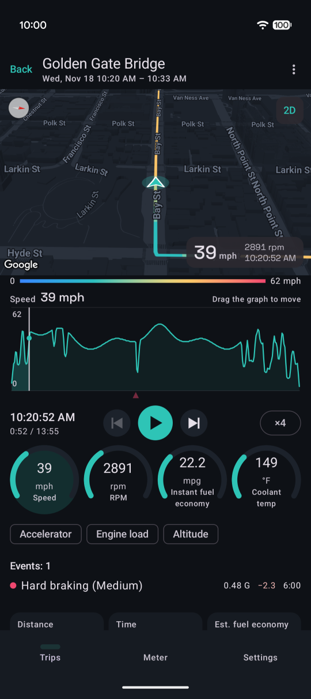
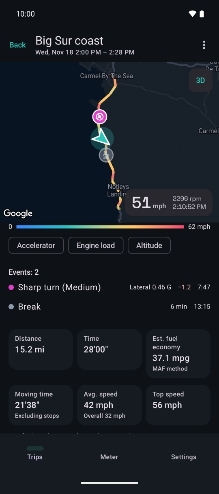
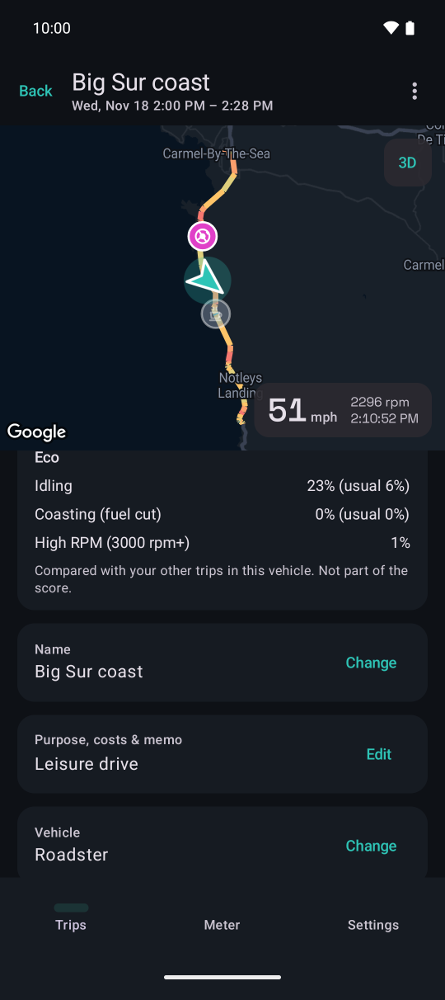
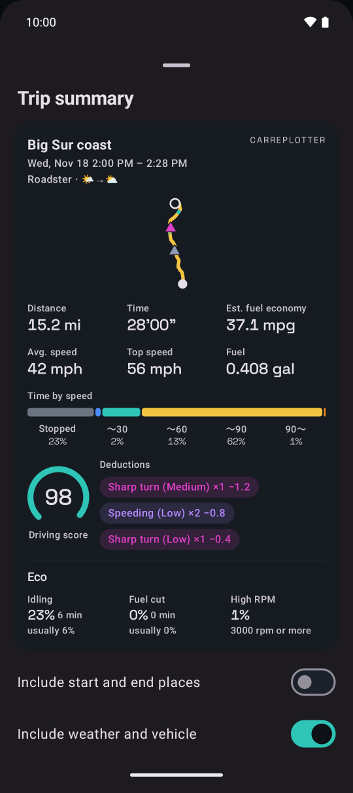
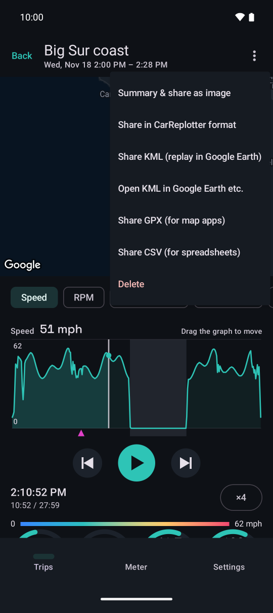

Trip details and replay
Replay a trip on the map and see the speed, RPM, fuel economy and more at each moment.
Map and playback

123456789- 1The route is drawn in colors. Events are shown with an icon for each kind; tap one to jump to that time
- 2Switch to the 3D map
- 3Speed, RPM and clock time at the playback position
- 4Color legend (which color means which value)
- 5Time graph. Drag across it to move to that time. The ▲ marks below are events (upcoming ones are faded) and gray bands are breaks
- 6From the left: time at the playback position and time since the start, previous event, play / pause, next event
- 7Playback speed (each tap: ×1, ×4, ×16, ×60)
- 8Speed, RPM, instant fuel economy and coolant at the playback time. Tap one to show that value as colors and the graph (the selected one is highlighted)
- 9Show the other values (throttle, engine load, altitude) as colors and the graph
Event icons on the map: an upward arrow for hard acceleration, a downward arrow for hard braking, a speedometer for speeding, a steering wheel for sharp turns, a burst for shocks and a coffee cup for breaks. Zoom in to see a label with the kind, strength and time next to each icon. Events after the playback position are faded.
Coloring and graphs for throttle, engine load, coolant and altitude are Premium features (only values that were recorded appear).

1The 3D map looks down from behind the car, with the direction of travel up. Buildings appear in 3D in cities. Moving the map with your finger stops following the car; playing resumes it.
- 1Back to the top-down map
Dashed sections
- Dashed line: weak GPS signal (tunnels, under roofs, under overpasses). The points before and after are joined with a straight line
- Gray dotted line: GPS was not being recorded (location permission or the device's location was off)
- In both, the car moves along the line at the speed reported by the car during playback (it stays still while the car was stopped)
Events and summary

12- 1Events: level, strength, deduction and time from the start. Tap to jump there
- 2Distance, time, estimated fuel economy, moving time, average and top speed
Events are hard acceleration, hard braking, sharp turns and speeding (each with low, medium and high levels), plus impacts and breaks. Choose from which level they appear on the map in Settings → Driving events (see Driving score and events).

123Further down are the start and end places (you can register them as places).
- 1Trip name
- 2Purpose (commute, business, pickup, leisure and more), costs (tolls, fuel and more) and memo
- 3The vehicle (you can change it later)
Trip summary
When you stop recording yourself on the meter, a trip summary appears (it doesn't appear after an automatic stop, since the trip may continue after a break). Open trip details in the summary takes you to the replay of that trip. You can also open it any time from Summary & share as image in the ⋮ menu of the trip details.

A card with the route line (events as ▲), distance, time, fuel economy, average and top speed, fuel, time by speed, driving score and deductions, and eco figures. The version of the app that recorded the trip is shown at the top right.
Share as image turns the card into a picture to send. No map image is used; the route is just a line. Start and end places are left out by default (they could reveal where you live). You can choose whether to include the weather and vehicle name.
Export and sharing

123The ⋮ menu at the top right. You can delete the trip from the bottom of it.
- 1Opens the trip summary (you can share it as an image)
- 2CarReplotter format, which others can open and replay in CarReplotter
- 3KML (replay in Google Earth), GPX (for mapping apps), CSV (for spreadsheets, a value every second)
When sharing in CarReplotter format, you can choose whether to trim the start and end (to keep places such as your home private; the trimmed time counts driving only, not time spent stopped) and whether to include the memo and costs. The adapter name, VIN and addresses are never included. The file is sent as a zip (….crtrip.zip), so it can also be sent by messaging apps and email.